首页 > 编程笔记
MySQL Workbench使用教程
MySQL Workbench 是一款专为 MySQL 设计的集成化桌面软件，也是下一代的可视化数据库设计、管理的工具，它同时有开源和商业化两个版本。该软件支持 Windows 和 Linux 系统，可以从 https://dev.mysql.com/downloads/workbench/ 下载。
MySQL Workbench 有两个版本：
MySQL Workbench 的初始界面如下图所示。
在 MySQL 中，SCHEMAS 相当于 DATABASES 的列表。在 SCHEMAS 列表的空白处右击，选择 Refresh All 即可刷新当前数据库列表。


在创建数据库的对话框中，在 Name 框中输入数据库的名称，在 Collation 下拉列表中选择数据库指定的字符集。单击 Apply 按钮，即可创建成功，如下图所示。
在创建数据库的对话框中设置完成之后，可以预览当前操作的 SQL 脚本，即 CREATE DATABASE test_db，然后单击 Apply 按钮，最后在下一个弹出的对话框中直接单击 Finish 按钮，即可完成数据库 test_db 的创建，如下图所示。
使用同样的方法创建数据库 test_db_char，指定字符集默认为UTF-8。
在修改数据库的对话框中，数据库的名称不可以修改，在 Collation 下拉列表中选择数据库需要修改为的字符集。单击 Apply 按钮，即可创建成功，如下图所示。
在弹出的对话框中单击 Drop Now 按钮，即可直接删除数据库，如下图所示。
若单击 Review SQL 按钮，则可以显示删除操作对应的 SQL 语句。单击 Execute 按钮就可以执行删除操作，如下图所示。
数据库 test_db 被设置为默认数据库之后，SCHEMAS 列表中的 test_db 字体会被加粗显示，如下图所示。
在创建数据表的对话框中，在 Table Name 框中输入数据表的名称，在图中的方框部分编辑数据表的列信息，编辑完成后，单击 Apply 按钮，即可成功创建数据表，如下图所示。
设置完成之后，可以预览当前操作的 SQL 脚本，然后单击 Apply 按钮，最后在下一个弹出的对话框中直接单击 Finish 按钮，即可完成数据表 tb_emp1 的创建，如下图所示。
在查看数据表的对话框中，Info 标签显示了该数据表的表名、存储引擎、列数、表空间大小、创建时间、更新时间、字符集校对规则等信息，如下图所示。
在 Columns 标签显示了该表数据列的信息，包括列名、数据类型、默认值、非空标识、字符集、校对规则和使用权限等信息，如下图所示。
在修改数据表的对话框中，如下图所示，在 Table Name 框中可以修改数据表的名称，在图中的方框部分编辑数据表的列信息，包括编辑列名、编辑数据类型、新建列、删除列，通过上下拖曳可以调整列的顺序，在数据列上右击即可删除该列。编辑完成后，单击 Apply 按钮，即可成功修改数据表。
设置完成之后，可以预览当前操作的 SQL 脚本，然后单击 Apply 按钮，最后在下一个弹出的对话框中直接单击 Finish 按钮，即可完成数据表 tb_emp1 的修改，如下图所示。
在弹出的对话框中单击 Drop Now 按钮，可以直接删除数据表，如下图所示。
若在弹出的对话框中单击 Review SQL 按钮，则可以显示删除操作对应的 SQL 语句，单击 Execute 按钮就可以执行删除操作，如下图所示。
设置完成之后，可以预览当前操作的 SQL 脚本，然后单击 Apply 按钮，最后在下一个弹出的对话框中直接单击 Finish 按钮，即可完成数据表 tb_emp2 中外键的创建，如下图所示。
在外键约束的列表中，在需要删除的外键上右击，选择 Delete selected 选项，删除对应的外键，单击 Apply 按钮，即可完成删除，如下图所示。
设置完成之后，可以预览当前操作的 SQL 脚本，然后单击 Apply 按钮，最后在下一个弹出的对话框中直接单击 Finish 按钮，即可完成数据表 tb_emp2 中外键的删除，如下图所示。
在弹出的对话框中，Edit 菜单栏中包含三个按钮，分别为“修改”“插入”和“删除”。单击 Apply 按钮，即可保存修改，如下图所示。
在编辑数据表的对话框中设置完成之后，可以预览当前操作的 SQL 脚本，然后单击 Apply 按钮，最后在下一个弹出的对话框中直接单击 Finish 按钮，即可完成数据表 tb_courses 中数据的修改，如下图所示。
在编辑视图的对话框中，如下图所示，设置视图名称和视图的定义。编辑完成后，单击 Apply 按钮，即可成功创建视图。
设置完成之后，可以预览当前操作的 SQL 脚本，然后单击 Apply 按钮，最后在下一个弹出的对话框中直接单击 Finish 按钮，即可完成视图 view_courses 的创建，如下图所示。
在查看视图内容的对话框中，视图内容为只读，不可修改，如下图所示。
在弹出的对话框中单击 Drop Now 按钮，即可直接删除视图，如下图所示。
若单击 Review SQL，则可以显示删除操作对应的 SQL 语句，单击 Execute 按钮就可以执行删除操作，如下图所示。
在创建存储过程的对话框中，设置存储过程的名称和存储过程的定义，单击 Apply 按钮，即可成功创建自定义函数，如下图所示
设置完成之后，可以预览当前操作的 SQL 脚本，然后单击 Apply 按钮，最后在下一个弹出的对话框中直接单击 Finish 按钮，即可完成存储过程 new_procedure 的创建，如下图所示。
在 SCHEMAS 界面中，展开 test_db 数据库中的 Stored Procedures 目录，在新创建的存储过程 new_procedure 上右击，可以实现创建存储过程、修改存储过程、删除存储过程等操作，如下图所示。
在 SHEMAS 界面中，在 test_db 数据库的右侧单击“信息”按钮，如下图所示。
在弹出的数据库信息列表中，选择 Triggers 选项卡，即可查看触发器的详细信息，包括触发器名称、事件类型、关联的数据表和触发条件等信息，如下图所示。
进入用户和权限的管理界面，左上角的方框中显示当前数据库中的用户列表，包括数据库系统默认的用户 mysql.session、mysql.sys、root 以及自定义的用户，同时列表中还显示用户的主机名称，如 localhost。在管理界面的左下角可以单击 Add Account 按钮，即可创建一个新用户，如下图所示。
在创建用户界面，可以设置用户名称、认证类型、主机名称、用户密码和确认密码，单击 Apply 按钮，即可完成用户的创建，如下图所示。

在左侧的用户列表中，选择某个用户，即可查看用户的用户名称、认证类型、主机名称、用户密码等信息。并且可以对用户信息进行修改，修改完成后单击 Apply 按钮，即可完成用户信息的修改，如下图所示。
MySQL Workbench 是可视化数据库设计软件，为数据库管理员和开发人员提供了一整套可视化的数据库操作环境，主要功能有数据库设计与模型建立、SQL 开发（取代 MySQL Query Browser）、数据库管理（取代 MySQL Administrator）。如果想了解学习MySQL，可猛击《MySQL教程：数据库学习宝典》链接进行阅读！
MySQL Workbench 有两个版本：
- MySQL Workbench Community Edition（也叫 MySQL Workbench OSS，社区版），MySQL Workbench OSS 是在GPL证书下发布的开源社会版本。
- MySQL Workbench Standard Edition（也叫 MySQL Workbench SE，商业版本），MySQL Workbench SE 是按年收费的商业版本。
MySQL Workbench 的初始界面如下图所示。
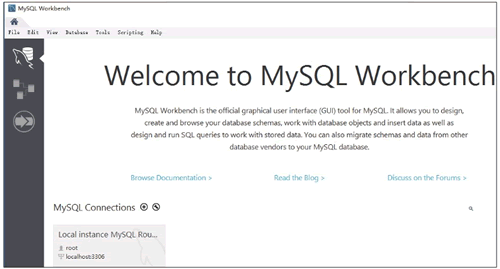
使用 Workbench 操作数据库
打开 MySQL Workbench 软件，如下图所示，方框标识的部分就是当前数据库服务器中已经创建的数据库列表。在 MySQL 中，SCHEMAS 相当于 DATABASES 的列表。在 SCHEMAS 列表的空白处右击，选择 Refresh All 即可刷新当前数据库列表。
1) 创建数据库
在 SCHEMAS 列表的空白处右击，选择“Create Schema…”，则可创建一个数据库，如下图所示。在创建数据库的对话框中，在 Name 框中输入数据库的名称，在 Collation 下拉列表中选择数据库指定的字符集。单击 Apply 按钮，即可创建成功，如下图所示。
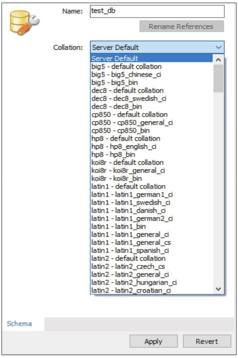
在创建数据库的对话框中设置完成之后，可以预览当前操作的 SQL 脚本，即 CREATE DATABASE test_db，然后单击 Apply 按钮，最后在下一个弹出的对话框中直接单击 Finish 按钮，即可完成数据库 test_db 的创建，如下图所示。
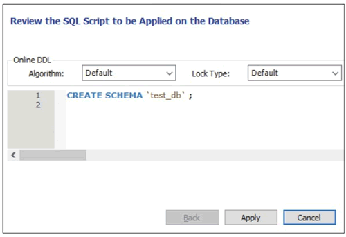
使用同样的方法创建数据库 test_db_char，指定字符集默认为UTF-8。
2) 修改数据库
成功创建数据库后，可以修改数据库的字符集，在需要修改字符集的数据库上右击，选择“Alter Schema…”选项，即可修改数据库指定的字符集，如下图所示。
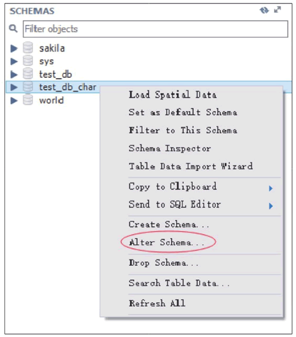
在修改数据库的对话框中，数据库的名称不可以修改，在 Collation 下拉列表中选择数据库需要修改为的字符集。单击 Apply 按钮，即可创建成功，如下图所示。
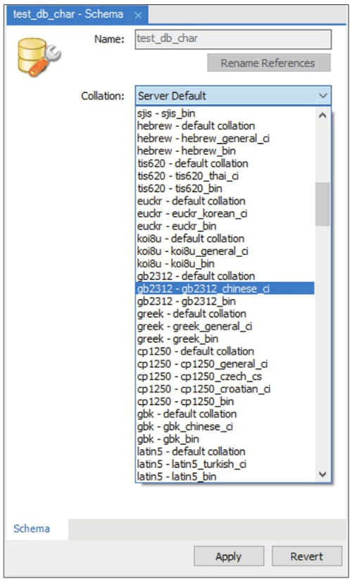
3) 删除数据库
可以在 SCHEMAS 列表中删除数据库，在需要删除的数据库上右击，选择“Drop Schema…”，如下图所示。
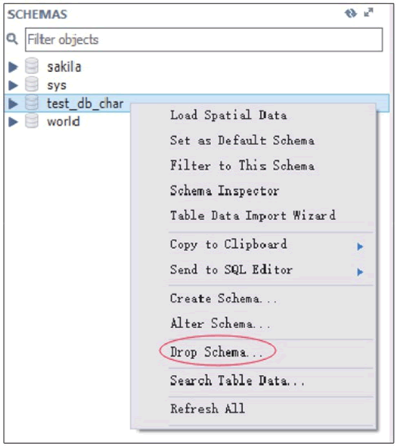
在弹出的对话框中单击 Drop Now 按钮，即可直接删除数据库，如下图所示。
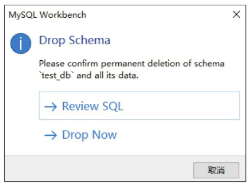
若单击 Review SQL 按钮，则可以显示删除操作对应的 SQL 语句。单击 Execute 按钮就可以执行删除操作，如下图所示。
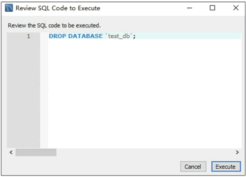
4) 设置默认数据库
在 SCHEMAS 列表中可以选择默认的数据库，在需要指定默认的数据库上右击，选择 Set As Default Schema，如下图所示。该操作相当于命令行工具中的 USE<database_name> 命令。
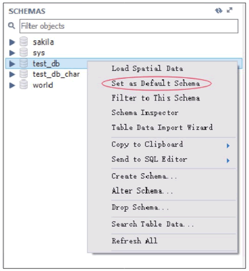
数据库 test_db 被设置为默认数据库之后，SCHEMAS 列表中的 test_db 字体会被加粗显示，如下图所示。
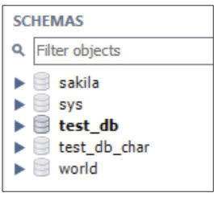
使用 Workbench 操作数据表
1) 创建数据表
打开 MySQL Workbench 软件，在 SCHEMAS 列表中展开当前默认的 test_db 数据库，在 Tables 菜单上右击，选择“Create Table…”，即可在 test_db 数据库中创建数据表，如下图所示。
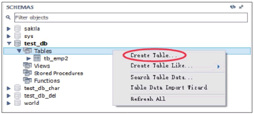
在创建数据表的对话框中，在 Table Name 框中输入数据表的名称，在图中的方框部分编辑数据表的列信息，编辑完成后，单击 Apply 按钮，即可成功创建数据表，如下图所示。
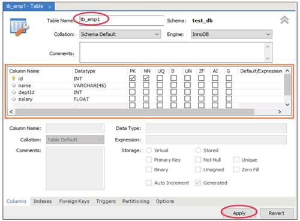
设置完成之后，可以预览当前操作的 SQL 脚本，然后单击 Apply 按钮，最后在下一个弹出的对话框中直接单击 Finish 按钮，即可完成数据表 tb_emp1 的创建，如下图所示。
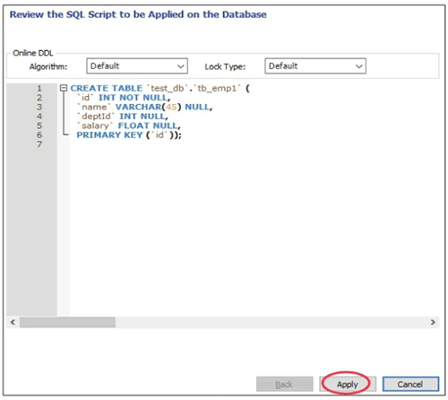
2) 查看数据表
成功创建数据表后，可以查看数据表的结构信息，在需要查看表结构的数据表上右击，选择 Table Inspector 选项，即可查看数据表的结构，如下图所示。
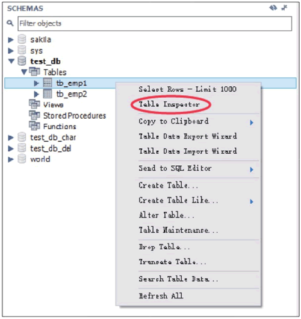
在查看数据表的对话框中，Info 标签显示了该数据表的表名、存储引擎、列数、表空间大小、创建时间、更新时间、字符集校对规则等信息，如下图所示。
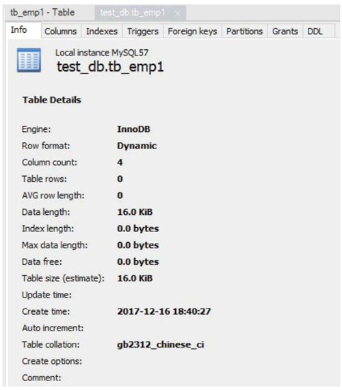
在 Columns 标签显示了该表数据列的信息，包括列名、数据类型、默认值、非空标识、字符集、校对规则和使用权限等信息，如下图所示。
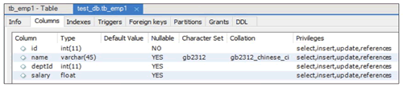
3) 修改数据表
在 SCHEMAS 界面的 test_db 数据库中，在需要修改表结构的数据表上右击，选择“Alter Table…”选项，即可修改数据表的基本信息和数据表结构，如下图所示。
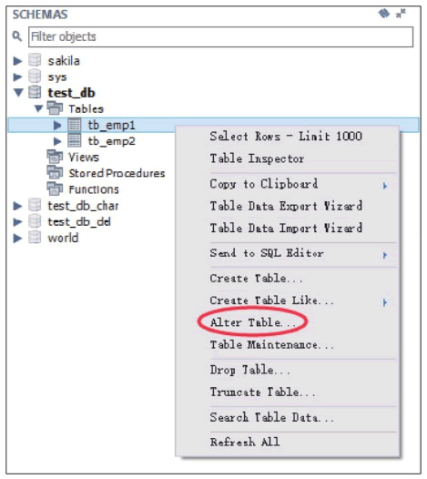
在修改数据表的对话框中，如下图所示，在 Table Name 框中可以修改数据表的名称，在图中的方框部分编辑数据表的列信息，包括编辑列名、编辑数据类型、新建列、删除列，通过上下拖曳可以调整列的顺序，在数据列上右击即可删除该列。编辑完成后，单击 Apply 按钮，即可成功修改数据表。
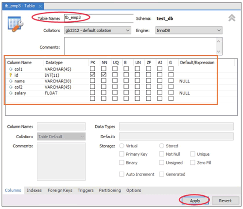
设置完成之后，可以预览当前操作的 SQL 脚本，然后单击 Apply 按钮，最后在下一个弹出的对话框中直接单击 Finish 按钮，即可完成数据表 tb_emp1 的修改，如下图所示。
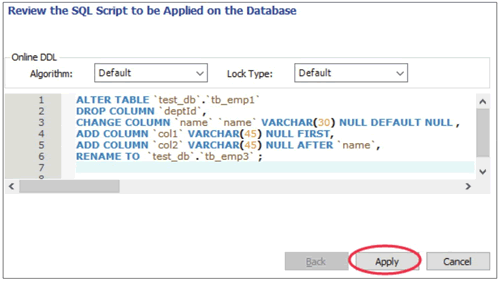
4) 删除数据表
可以在 SCHEMAS 中的 test_db 数据库的 Tables 列表中删除数据表，在需要删除的数据表上右击，选择“Drop Table…”，如下图所示。
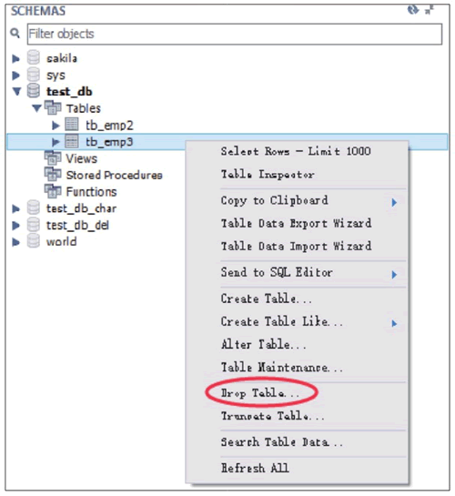
在弹出的对话框中单击 Drop Now 按钮，可以直接删除数据表，如下图所示。
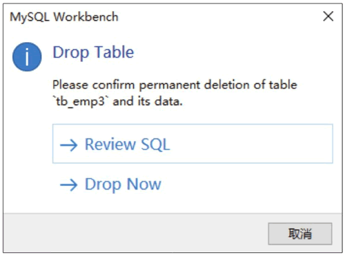
若在弹出的对话框中单击 Review SQL 按钮，则可以显示删除操作对应的 SQL 语句，单击 Execute 按钮就可以执行删除操作，如下图所示。
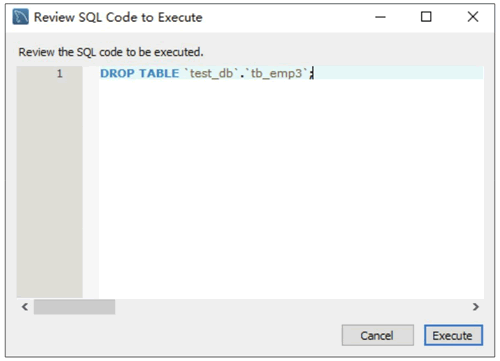
主键约束
在 MySQL Workbench 中，在修改表的对话框中，控制 PK 列的勾选情况，即可操作数据表的主键约束，当勾选 PK 复选框时，该列就是数据表的主键；当取消勾选 PK 复选框时，则取消该列的主键约束。单击 Apply 按钮即可完成表的修改，如下图所示。
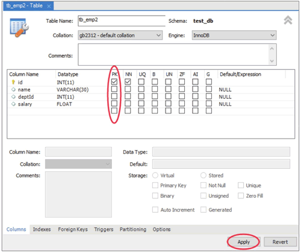
外键约束
在 MySQL Workbench 中，打开修改数据表的对话框，进入 Foreign Keys 标签，首先在 Foreign Key Name 中填入外键名称，其次在 Referenced Table 中选择当前数据库中的数据表，然后选择设置外键的字段，接着选择主表的关联字段，最后单击 Apply 按钮即可完成外键的添加操作，如下图所示。
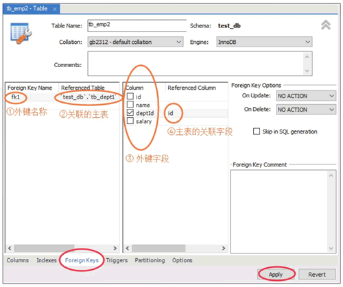
设置完成之后，可以预览当前操作的 SQL 脚本，然后单击 Apply 按钮，最后在下一个弹出的对话框中直接单击 Finish 按钮，即可完成数据表 tb_emp2 中外键的创建，如下图所示。
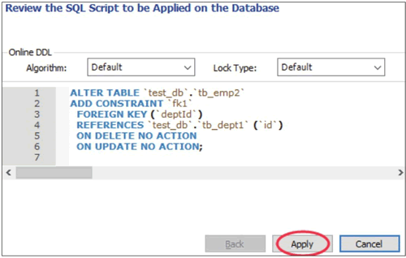
在外键约束的列表中，在需要删除的外键上右击，选择 Delete selected 选项，删除对应的外键，单击 Apply 按钮，即可完成删除，如下图所示。
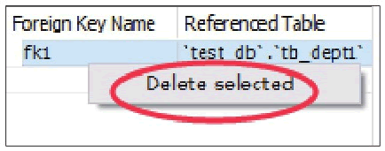
设置完成之后，可以预览当前操作的 SQL 脚本，然后单击 Apply 按钮，最后在下一个弹出的对话框中直接单击 Finish 按钮，即可完成数据表 tb_emp2 中外键的删除，如下图所示。
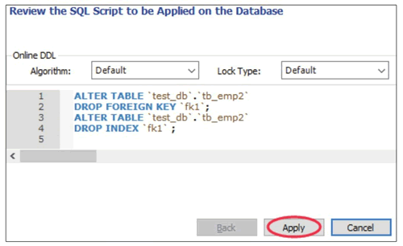
唯一约束
在 MySQL Workbench 中，在修改数据表的对话框中，控制 UQ 列的勾选情况，即可操作数据表的唯一约束，当勾选 UQ 复选框时，该列就是数据表的唯一约束索引；当取消勾选 UQ 复选框时，则取消该列的唯一约束索引。单击 Apply 按钮即可完成表的修改，如下图所示。
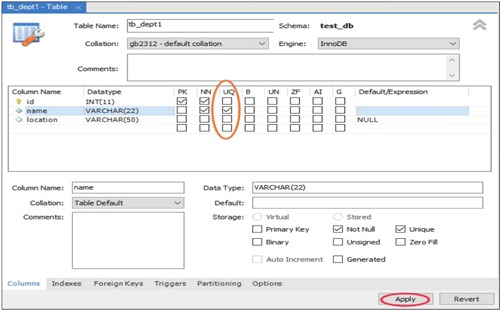
默认值约束
在 MySQL Workbench 中，在修改数据表的对话框中，在 Default/Expression 列中编辑字段的默认值。单击 Apply 按钮即可完成表的修改，如下图所示。
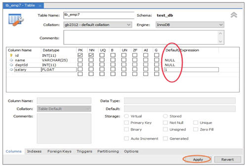
非空约束
在 MySQL Workbench 中，在修改数据表的对话框中，控制 NN 列的勾选情况，即可操作数据表的非空约束。当勾选 NN 复选框时，该列为数据表的非空约束；当取消勾选 NN 复选框时，则取消该列的非空约束。单击 Apply 按钮即可完成表的修改，如下图所示。
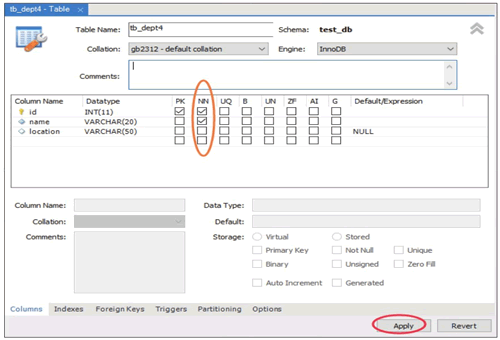
编辑表中的数据
打开 MySQL Workbench 软件，在 SCHEMAS 列表中展开当前默认的 test_db 数据库，展开 Tables 菜单，在 tb_courses 表上右击，选择 Select Rows–Limit 1000，即可对 tb_courses 表中的数据进行编辑操作，如下图所示。
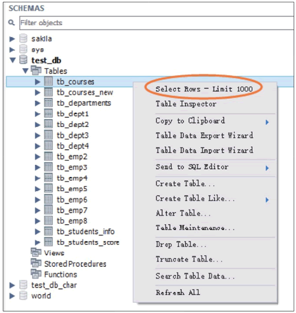
在弹出的对话框中，Edit 菜单栏中包含三个按钮，分别为“修改”“插入”和“删除”。单击 Apply 按钮，即可保存修改，如下图所示。
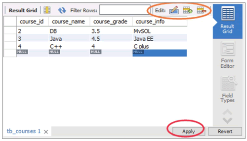
在编辑数据表的对话框中设置完成之后，可以预览当前操作的 SQL 脚本，然后单击 Apply 按钮，最后在下一个弹出的对话框中直接单击 Finish 按钮，即可完成数据表 tb_courses 中数据的修改，如下图所示。
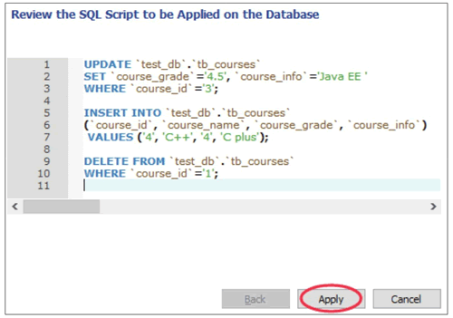
视图
1) 创建视图
打开 MySQL Workbench 软件，在 SCHEMAS 列表中展开当前默认的 test_db 数据库，在 Views 菜单上右击，选择“Create View…”，即可创建一个视图，如下图所示。
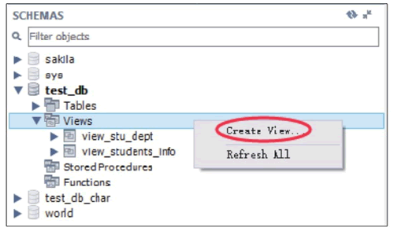
在编辑视图的对话框中，如下图所示，设置视图名称和视图的定义。编辑完成后，单击 Apply 按钮，即可成功创建视图。
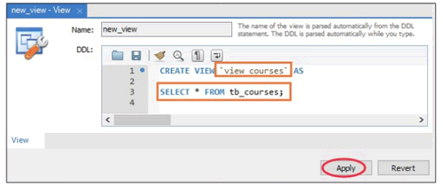
设置完成之后，可以预览当前操作的 SQL 脚本，然后单击 Apply 按钮，最后在下一个弹出的对话框中直接单击 Finish 按钮，即可完成视图 view_courses 的创建，如下图所示。
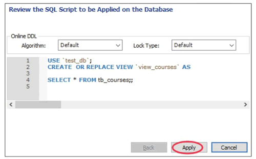
2) 查看视图信息
此时，可以在 Views 目录下找到新创建的视图 view_courses，右击 view_courses，选择 Select Rows–Limit 1000 选项，即可查看视图内容，如下图所示。
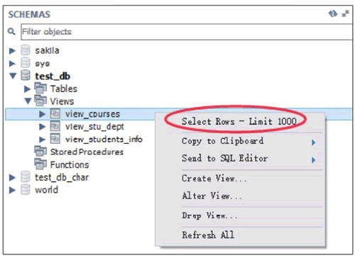
在查看视图内容的对话框中，视图内容为只读，不可修改，如下图所示。
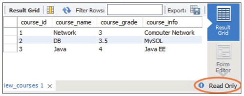
3) 删除视图
可以在 SCHEMAS 的 Views 列表中删除视图，在需要删除的视图上右击，选择“Drop View…”，如下图所示。
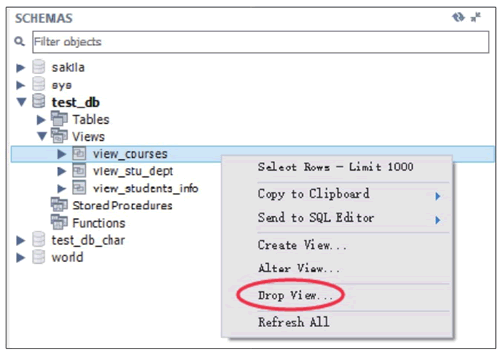
在弹出的对话框中单击 Drop Now 按钮，即可直接删除视图，如下图所示。
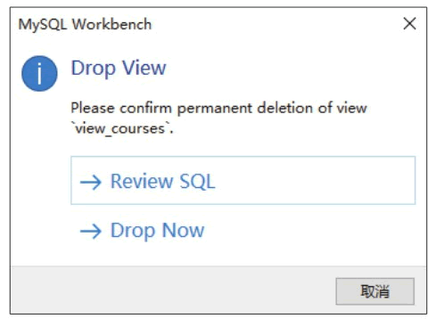
若单击 Review SQL，则可以显示删除操作对应的 SQL 语句，单击 Execute 按钮就可以执行删除操作，如下图所示。
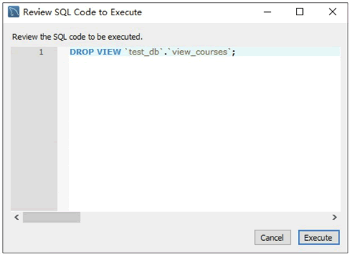
存储过程
打开 MySQL Workbench 软件，在菜单栏中单击“新建存储函数”按钮，即可新建存储过程，如下图所示。
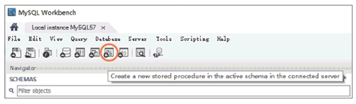
在创建存储过程的对话框中，设置存储过程的名称和存储过程的定义，单击 Apply 按钮，即可成功创建自定义函数，如下图所示
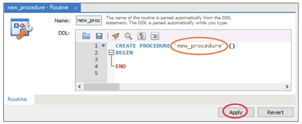
设置完成之后，可以预览当前操作的 SQL 脚本，然后单击 Apply 按钮，最后在下一个弹出的对话框中直接单击 Finish 按钮，即可完成存储过程 new_procedure 的创建，如下图所示。
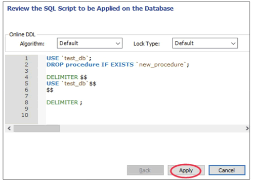
在 SCHEMAS 界面中，展开 test_db 数据库中的 Stored Procedures 目录，在新创建的存储过程 new_procedure 上右击，可以实现创建存储过程、修改存储过程、删除存储过程等操作，如下图所示。
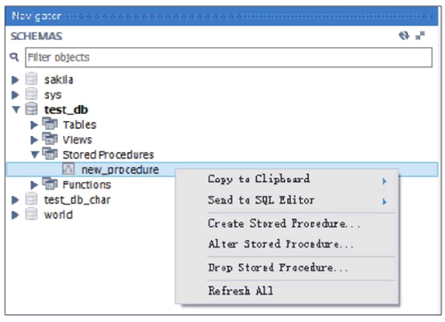
触发器
打开 MySQL Workbench 软件，在 SCHEMAS 界面中，打开 test_db 数据库目录，展开 tb_emp8 的 Triggers 目录，可以查看该数据表相关的触发器，如下图所示。
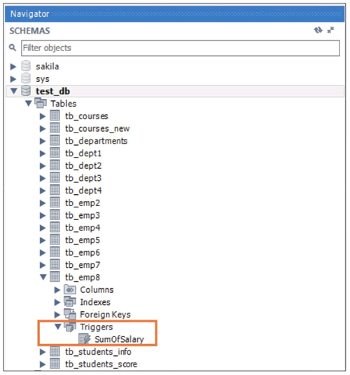
在 SHEMAS 界面中，在 test_db 数据库的右侧单击“信息”按钮，如下图所示。
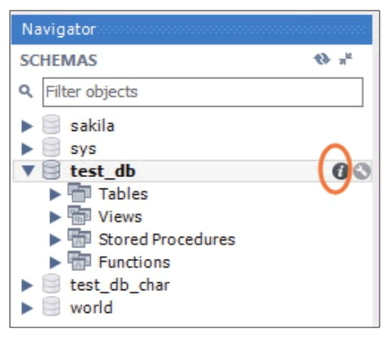
在弹出的数据库信息列表中，选择 Triggers 选项卡，即可查看触发器的详细信息，包括触发器名称、事件类型、关联的数据表和触发条件等信息，如下图所示。
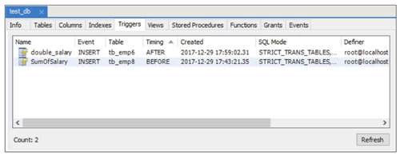
用户和权限
1) 创建用户
打开 MySQL Workbench 软件，在菜单栏中选择 Server 菜单，在展开的列表中选择 Users and Privileges 选项，进入用户和权限的管理界面，如下图所示。
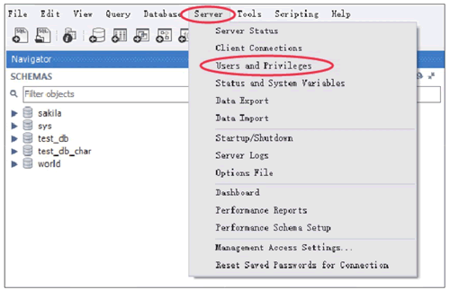
进入用户和权限的管理界面，左上角的方框中显示当前数据库中的用户列表，包括数据库系统默认的用户 mysql.session、mysql.sys、root 以及自定义的用户，同时列表中还显示用户的主机名称，如 localhost。在管理界面的左下角可以单击 Add Account 按钮，即可创建一个新用户，如下图所示。
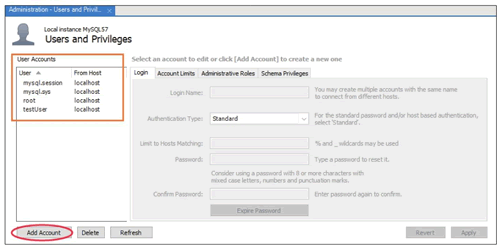
在创建用户界面，可以设置用户名称、认证类型、主机名称、用户密码和确认密码，单击 Apply 按钮，即可完成用户的创建，如下图所示。
在左侧的用户列表中，选择某个用户，即可查看用户的用户名称、认证类型、主机名称、用户密码等信息。并且可以对用户信息进行修改，修改完成后单击 Apply 按钮，即可完成用户信息的修改，如下图所示。
2) 删除用户
在用户列表的下方，可以单击 Delete 按钮删除用户，单击 Refresh 按钮刷新用户的列表，如下图所示。关注公众号「站长严长生」，在手机上阅读所有教程，随时随地都能学习。内含一款搜索神器，免费下载全网书籍和视频。

微信扫码关注公众号